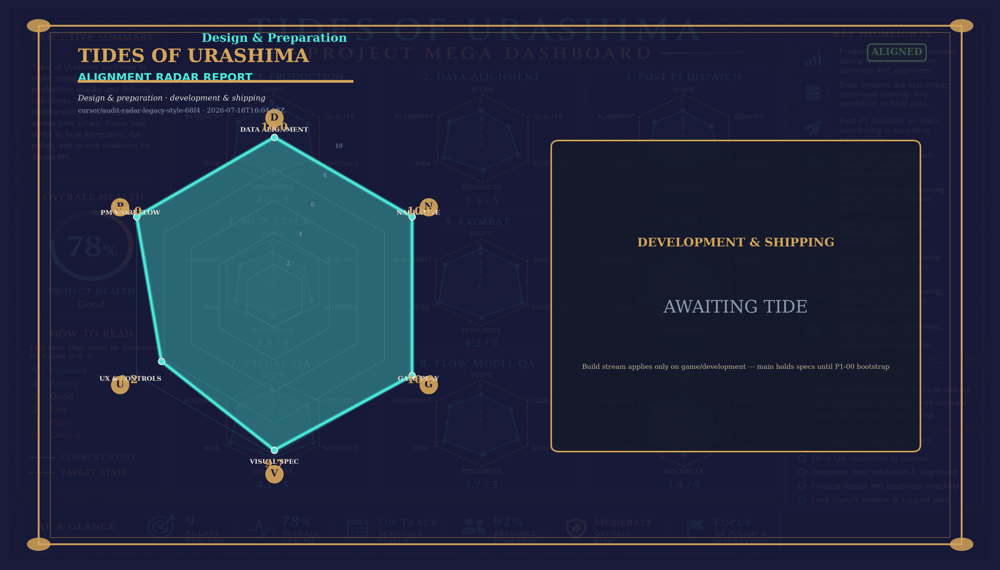
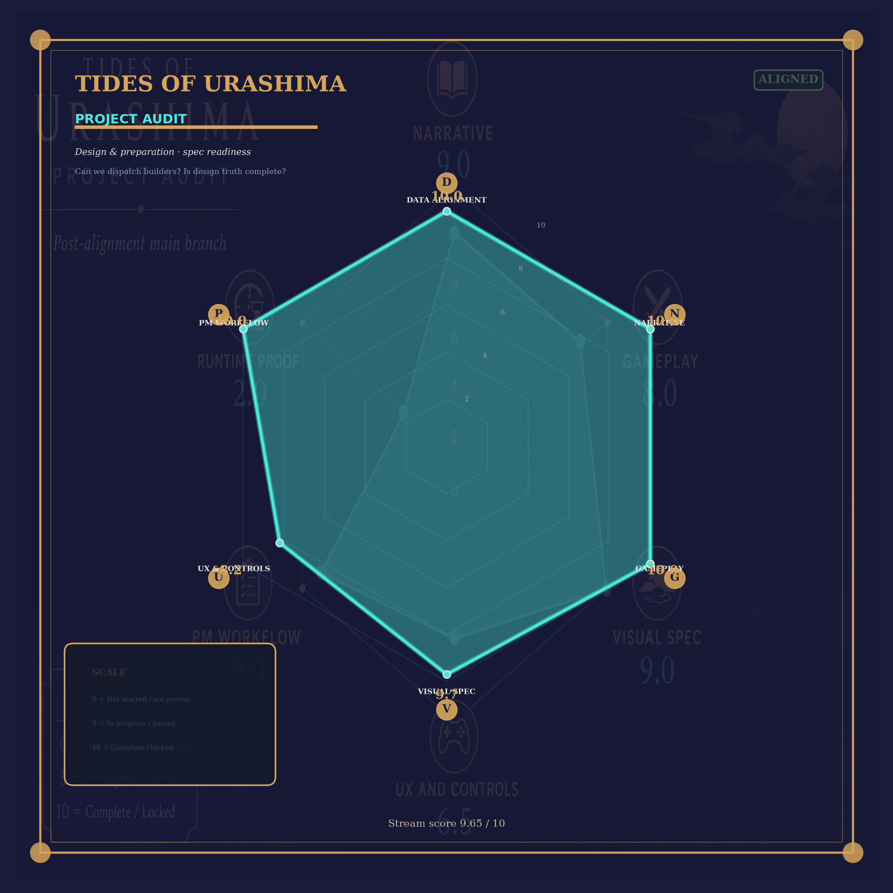
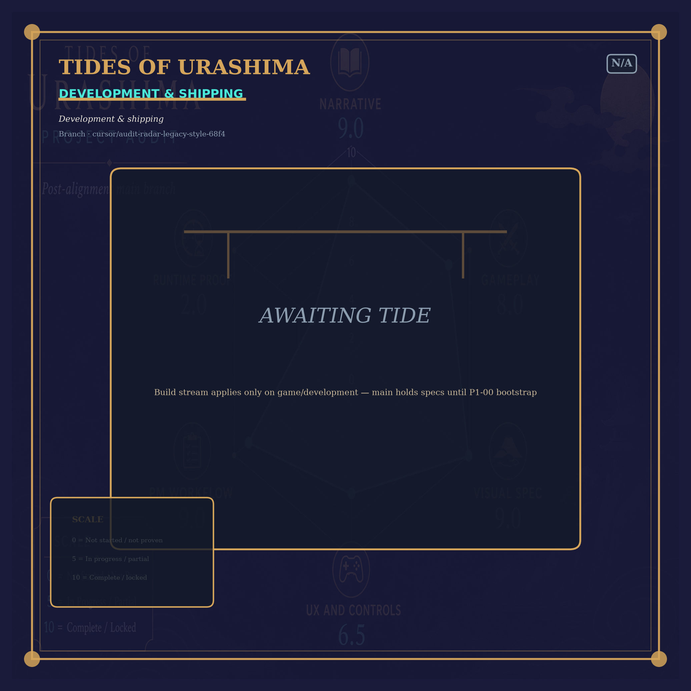
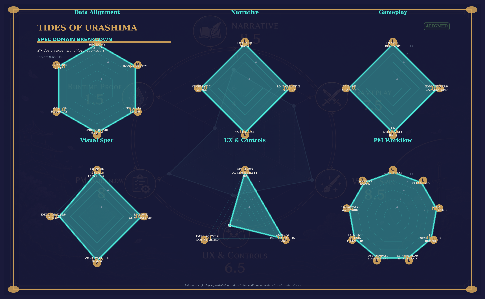
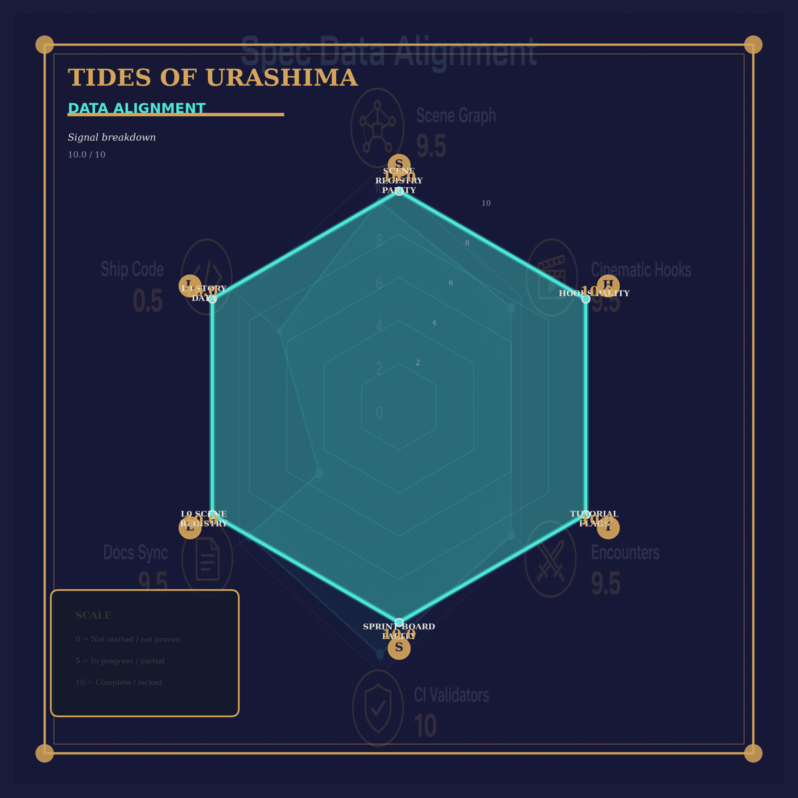
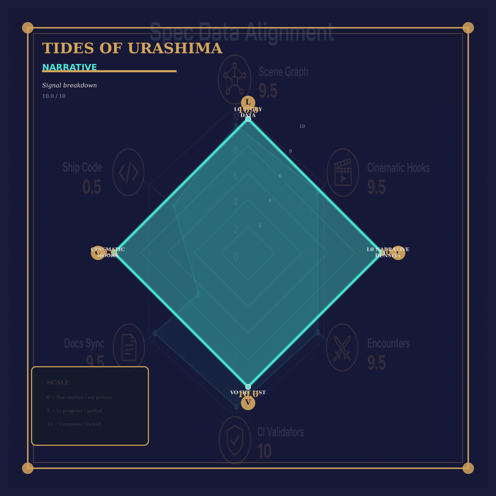
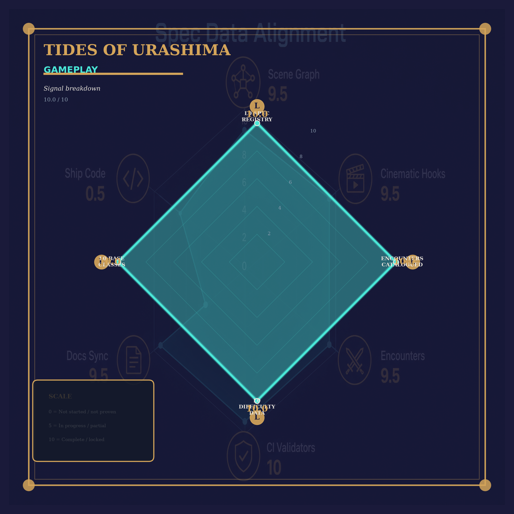
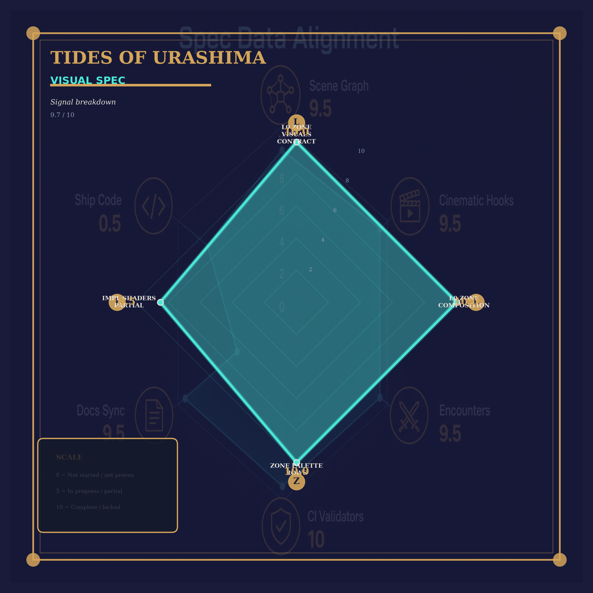
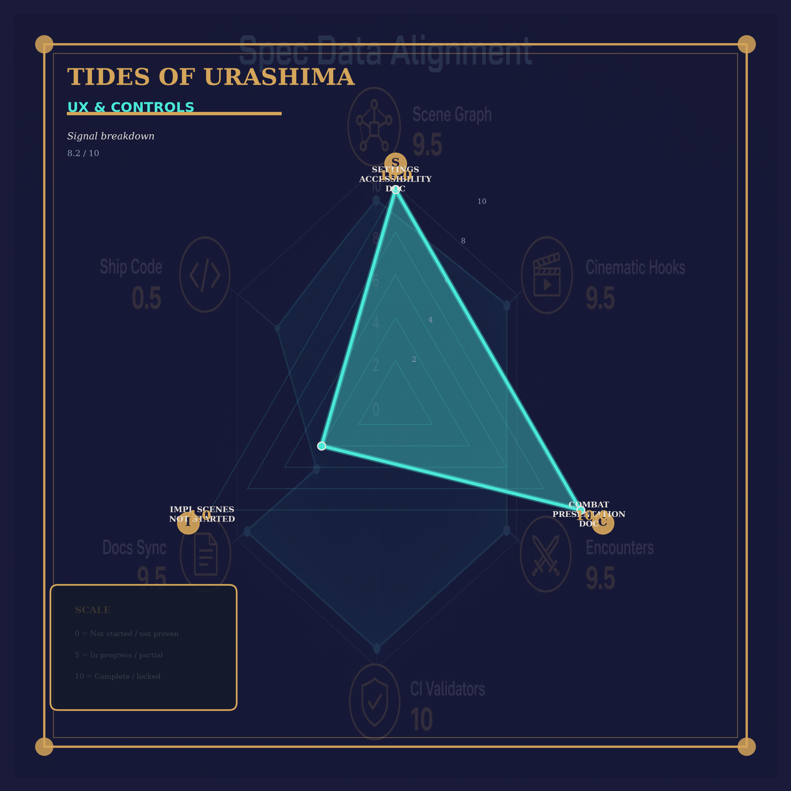
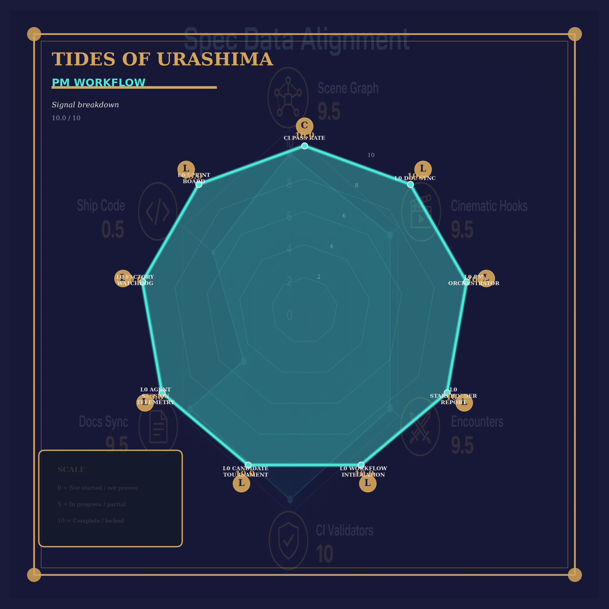

Tides of Urashima — Alignment Dashboard
Alignment audit — ALIGNED (cursor/audit-radar-legacy-style-68f4 @ cd87984) · Spec 9.65/10 · Build N/A/10
ALIGNED
· 2026-07-18T16:04:18Z · cursor/audit-radar-legacy-style-68f4 @ cd87984
Streams
Spec = design & preparation (main). Build = runtime & ship (game/development). Do not merge for management.
Design & Preparation
9.65/10
Can we dispatch builders? Is design truth complete?
ALIGNED
Development & Shipping
N/A
Build stream applies only on game/development — main holds specs until P1-00 bootstrap
N/A
Domain scores
Recommendation checklist
Stakeholder comms (P2) (1)
- P2 Refresh stakeholder visual pack
Copy PNGs to docs/compliance/alignment_audit_visuals/ then: bash tools/run_alignment_audit.sh --visuals-from docs/compliance/alignment_audit_visuals
Stream radars
Auto-generated spec/build radars from live scores — legacy art excluded.

Two-stream radar report · auto-generated
Spec readiness radar · auto-generated
Build readiness radar · auto-generated
Spec sub-radar breakdown (6 domains) · auto-generated
Data Alignment sub-radar · auto-generated
Narrative sub-radar · auto-generated
Gameplay sub-radar · auto-generated
Visual Spec sub-radar · auto-generated
UX & Controls sub-radar · auto-generated
PM Workflow sub-radar · auto-generatedRaw JSON